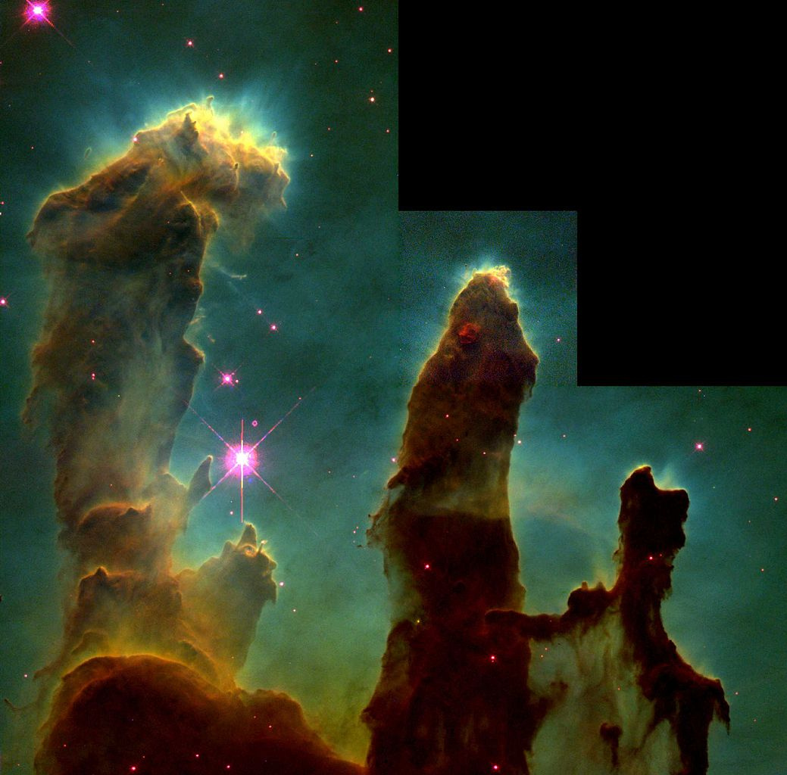

Magnitude 6.0. Open cluster and active star forming region/ H II region/ Emission Nebula in Serpens Cauda.
The famous "Pillars of Creation" image is from this nebula. Protostars are forming in the pillars. The length of the pillars in the image is about 1 ly long. The longest of the pillars in the nebula is 7 ly long. The pillars have been sculpted by intense UV radiation from nearby stars.
Image Credit: ESO
Image Credit: NASA, Jeff Hester, and Paul Scowen (Arizona State University)